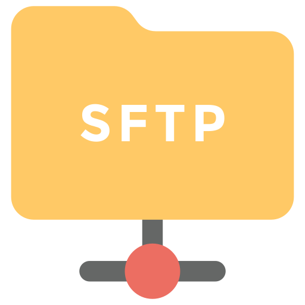

Me he encontrado con un dilema cuando he montado ownCloud y es que antes tenía directorios en mi Raspberry con los que editaba mis orgmode, todo.txt, que ahora están dentro de la nube y no los puedo editar.
Para solucionar este problema, he creado un docker con un servidor SSH para conectarme via SFTP. De esta manera también soluciono el problema que me comento un oyente, de como crear un servidor para conectarse a un directorio remoto cifrando el tráfico, todo ello dentro de una red local.

Este docker va a permitir el compartir un directorio local con el servidor SSH, solo aquel que necesito acceder, sin tener que conectarnos a la máquina host.
Mediante el almacenamiento externo de ownCloud, voy a conectarme a este docker por SFTP y con esto ganaré el tener los archivos fuera de la nube ownCloud y mantener todas las ventajas de mi nube como el control de versiones.
He creado el docker para varias arquitecturas partiendo de un Alpine Linux, lo que significa que la imágen tan solo tiene 11mb de tamaño y no consume nada en reposo.
docker run -d --name=ssh -p 7777:22 -v /nube:/nube ugeek/ssh:arm
Por defecto:
docker run -d --name=ssh -p 7777:22 -v /nube:/nube ugeek/ssh:amd64
Por defecto:
Para conectarse al servidor con Linux:
ssh root@localhost -p 7777
Si nuestra ip fuera 192.168.1.100:
ssh root@192.168.1.100 -p 7777
EntraenlaMatrix es la contraseña por defecto, pero quizás quieras cambiarla por una que decidas tu.
Vamos a cambiar la contraseña. Para hacer esto, tenemos que utilizar el comando passwd.
Podemos hacerlo con un solo comando con:
docker exec -it ssh passwd
Ahora pedirá que pongamos la nueva contraseña que queremos utilizar, la introducimos dos veces y ya está.
El archivo de configuración del servidor ssh, lo podemos encontrar en /etc/ssh/ssh_config.
Para no tener que escribir la contraseña cada vez y para darle más seguridad a nuestro servidor, vamos añadir la llave pública en nuestro servidor.
Creamos directorio de configuración ssh
docker exec -it ssh mkdir /root/.ssh
Creamos el archivo authorized_keys y añadimos id_*rsa.pub* de nuestra máquina local
docker exec -it ssh vi /root/.ssh/authorized_keys
Ahora solo falta que envíes o añadas añadas la llave pública del servidor.
El Dockerfile de este contenedor, lo he extraído de un repositorio del GitHub https://github.com/AzagraMac/alpine-ssh
Publicado por Angel el Saturday 06 February del 2021
También te puede interesar:
Powered by org-bash-blog
Writing in orgmode whith emacs

Este obra está bajo una licencia de Creative Commons Reconocimiento-NoComercial-CompartirIgual 4.0 Internacional.